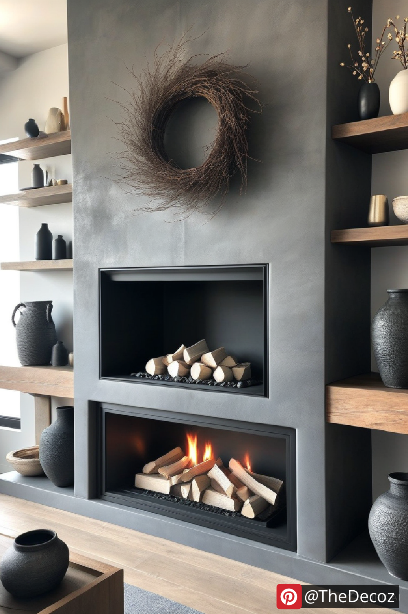
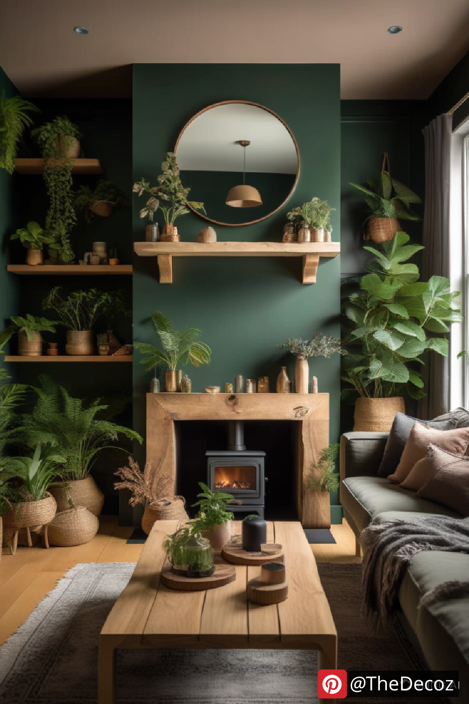
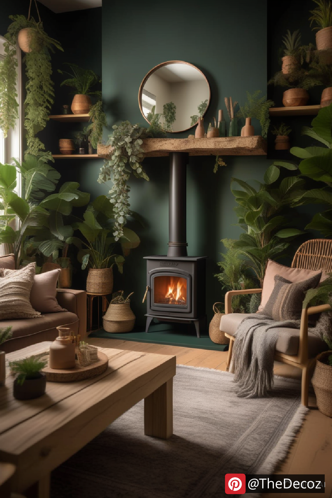
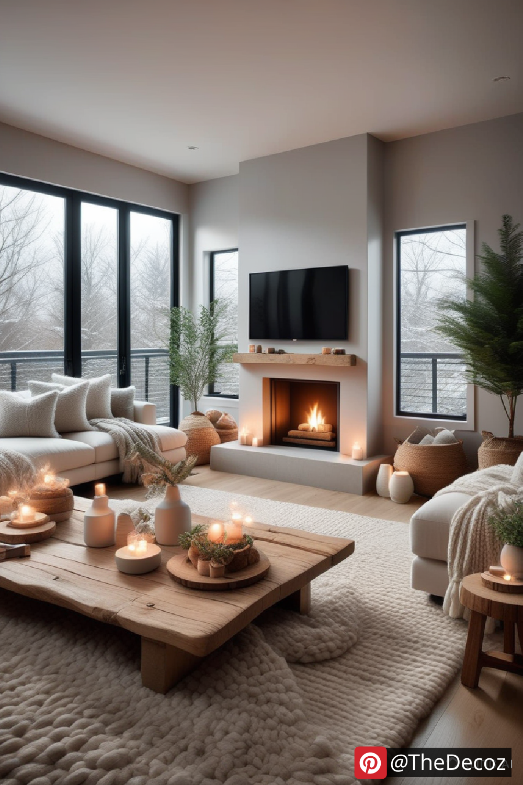
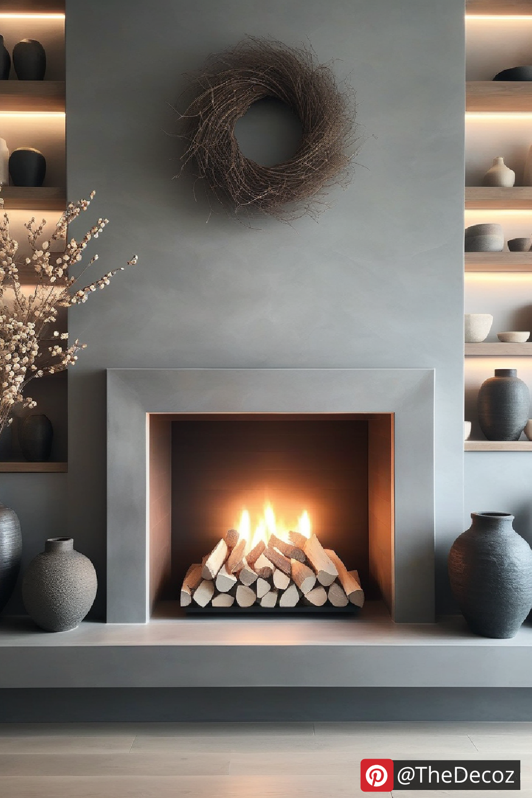

When it comes to creating a warm and inviting atmosphere in your home, the living room is often the focal point. One of the most captivating features you can incorporate into your living room decor is a fireplace. Not only does it provide warmth during chilly evenings, but it also serves as a stunning centerpiece that can elevate your interior design. In this article, we will explore innovative ideas for living room decor that beautifully integrate a fireplace, ensuring your space is both stylish and functional.
A fireplace is more than just a source of heat; it’s a symbol of comfort and relaxation. It draws people together, making it an ideal spot for family gatherings or cozy evenings with friends. When considering living room decor, the fireplace can be the starting point for your design journey. Here are some innovative ideas to enhance your living room decor with a fireplace.
The mantel above your fireplace is a prime opportunity to showcase your style. Consider using bold colors or unique materials to make it stand out. A reclaimed wood mantel can add rustic charm, while a sleek marble finish can bring a touch of modern elegance. Decorate the mantel with art pieces, family photos, or seasonal decor to keep it fresh and inviting.
Flanking your fireplace with built-in shelves can create a seamless look while providing additional storage and display space. Use these shelves to showcase books, decorative items, and plants. This not only enhances the aesthetic appeal of your living room but also keeps the area organized and clutter-free.
The seating arrangement in your living room should encourage conversation and connection. Position your furniture to face the fireplace, creating a cozy gathering spot. Consider using a mix of seating options, such as a plush sofa, armchairs, and even floor cushions, to add comfort and style. This arrangement invites guests to relax and enjoy the warmth of the fire.
When decorating around your fireplace, consider the color palette and textures of your living room decor. Warm tones like deep reds, oranges, and browns can complement the natural warmth of the fire. Incorporate various textures through throw pillows, blankets, and rugs to create a layered look that feels inviting and cozy.
Lighting plays a crucial role in setting the mood of your living room. Incorporate ambient lighting around your fireplace to enhance its glow. Wall sconces, table lamps, or even string lights can create a warm and inviting atmosphere. Consider dimmable options to adjust the brightness according to the occasion.
Bringing nature indoors can enhance the overall aesthetic of your living room. Consider adding plants or natural materials like stone or wood to your decor. A stone fireplace can create a rustic feel, while potted plants can add a touch of freshness and life to the space.
Fireplaces come in various styles, from traditional wood-burning to modern electric models. Choose a style that complements your overall decor theme. A contemporary linear fireplace can serve as a sleek focal point in a modern living room, while a classic brick fireplace can enhance a more traditional setting.
One of the joys of having a fireplace is the ability to change your decor with the seasons. In the fall, consider adding pumpkins and autumn leaves; in winter, cozy blankets and holiday decorations can create a festive atmosphere. This not only keeps your living room decor fresh but also allows you to express your creativity throughout the year.
Incorporating a fireplace into your living room decor can transform your space into a warm and inviting haven. By focusing on innovative design elements such as a statement mantel, built-in shelving, and thoughtful seating arrangements, you can create a living room that is both stylish and functional. Remember to play with color, texture, and lighting to enhance the ambiance, and don’t hesitate to change your decor with the seasons. With these tips, your living room will not only be a place to gather but also a reflection of your personal style and comfort.
    